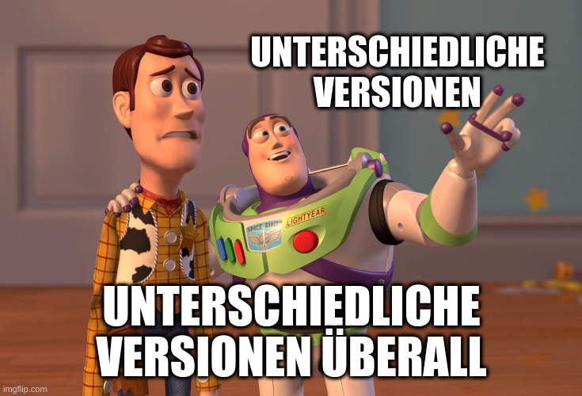

NixOS
$ whomai
- Felix Ulonska (Jabbi) er/ihm
- er/ihm
- Aktuell: Computer Science Master Bonn
- $dev @ devsaur
- Verwende NixOS seit etwa 1 Jahr
- Rede sehr gerne über NixOS
Naming is easy
 Source:
https://www.reddit.com/r/NixOS/comments/rffnx8/who_says_the_naming_is_confusing/
Source:
https://www.reddit.com/r/NixOS/comments/rffnx8/who_says_the_naming_is_confusing/
Wie man bisher Packages macht


Output hängt von allem möglichen ab
In Nix

Output hängt nur von Input ab
Build-Funktion ist determinitisch™:
- Internetverbindung deaktiviert
-
Die Umgebungsvariablen
$HOMEund$PATHsind auf bestimmte Werte festgelegt - Der Build-Ordner ist ein temporäres Verzeichnis
- Der Zeitstempel für den Build-Ausgabepfad wird auf 1-1-1970 zurückgesetzt
Enough Nix Lang to be dangorous
- Programmiersprache für Nix, speziell für die Konfiguration von Paketen
- Turing-Vollständig
-
Lazy
let a = abort "will never happen"; b = "hello"; c = "world"; in b + c -
Pure:
Es gibt keine Seiteneffekt: Output einer Funktion hängt nur vom Input ab - Functional
- Syntax: JSONs und Haskell gemeinsames Kind
myString = "Hallo Warpzone";
myNumber = 12;
myPath = ./cooleConfig; # Relativer Pfad
githubLink = github:NixOS/nixpkgs;
myList = [ 1 ./einAndereDatei "Anderes Element"];
[
1
/home/jabbi/einAndereDatei
"Anderes Element"
]biggestSet = {
smallerSet = {
element = "Test";
};
anderesElement = ./IchBinEineDatei;
};with biggestSet; [smallerSet anderesElement];[biggestSet.smallerSet biggestSet.anderesElement];Funktionen
Simples Lambda
let
inc = x: x + 1;
in (inc (inc 1))
3Weiteres Lambda
let
sum = x: y: x + y;
in (sum 1 3)
4Named Funktionen
let sum = { x, y }: x + y;
in sum {x = 12; y = 32;}44let sum = { x, y ? 1, ... }: x + y;
in sum { x = 32; z = 12;}33if-else
let max = x: y: if x ≥ y then x else y ;
in max 32 2;32Wir schreiben unser erster Paket
fn main() {
println!("Hello Kamphack!");
}# default.nix
with import <nixpkgs> {}; # STD-Library
stdenv.mkDerivation {
name = "helloWorld Rust";
src = ./.;
buildInputs = [ pkgs.rustc ];
buildPhase = ''
rustc helloWorld.rs
'';
installPhase = ''
mkdir -p $out/bin
cp helloWorld $out/bin/helloWorld
'';
}nix-build . /nix/store/6pbrmqzxghpd94v86knj821rij2zs23b-helloWorld-Rust$ tree -l
.
├── default.nix
├── helloWorld.rs
└── result -> /nix/store/51d486dsfi4v3ly5pixvyyj10sc8k16n-helloWorld-Rust
└── bin
└── helloWorld
2 directories, 3 files
nix-Shell
$ nix-shell -p ./result
$ helloWorld
Hallo Kamphack
Erzeugt eine Bash-Shell in der das Nix-Package
helloWorld. Fügt helloWorld in
$PATH hinzu. Für temporäre Verwendung
Jedes Paket aus nixpkgs möglich
$ nix-shell -p wiresharkNIX-Shell als dev-environment
Im aktuellen Verzeichnis liegt einedefault.nix
$ nix-shell
$ rustc
Usage: rustc [OPTIONS] INPUTExtrem mächtig!
Projekt kann sofort entwickelt werden.
nix-env
$ nix-env -i ./result
installing 'helloWorld-Rust'
building '/nix/store/j1sw6kfda5yin57xa0jsp6sirwlafs86-user-environment.drv'...
$ helloWorld
Hallo KamphackhelloWorld.
Jeder Stand wird in einer Generation gespeichert. Man kann zu jeder vorherigen zurück springen
$ nix-env --rollback
switching profile from version 47 to 46/nix/store
Enthält alle vom Nix-Paketmanager verwalteten Pakete und
Dateien.Dabei eine Namenskonvention für jedes Paket:
/nix/store/38in4n9cz6alhyc0hbb7g2yfsg7cgf8q-firefox-107.0
Hash ist Hash der Inputs
Runtime Dependenices
$ strings helloWorld | grep /nix/store
/nix/store/g8d5bnh9mh1364x17mjyc731fsi9a61m-glibc-2.35-163/lib/ld-linux-x86-64.so.2
/nix/store/g8d5bnh9mh1364x17mjyc731fsi9a61m-glibc-2.35-163/lib$ nix store -q -r /nix/store/6pbrmqzxghpd94v86knj821rij2zs23b-helloWorld-Rust
/nix/store/g8d5bnh9mh1364x17mjyc731fsi9a61m-glibc-2.35-163/nix/store: DependencyDadurch: Vollständige Dependenices sind bekannt
Nixpkgs
Sammlung von mehr als 80.000 Software-Paketen und Build-Beschreibungen, geschrieben in Nix Lang als Mono GitHub-Repo
Installation von Paketen
Alle Runtime-Dependenices von Paketen sind bekannt. Alle Paketen in nixpkgs werden durch hydra (online) gebaut und in einen zentralen Cache gespeichert. Zur Installation eines Pakets wird das Paket und der Runtime-Abhängigkeitsgraph runtergeladenPower von Nix Packagemanager
Nix Packagemanager bringt alles selber mit - Libraries wie libc. Es ist leicht jedes Paket neuzubauen und anpassung zu tätigen.Zu jedem Paket ist der vollständige Runtime-Abhängigkeitsgraph bekannt. Package-Manager ist unabhängig von NixOS und funktioniert auf jedem Linux und MacOS$ sh <(curl -L https://nixos.org/nix/install) --daemonNixOS
Können wir ein System wie Paket managen? Ja! Es wäre determinitisch, deklartativ und könnte in Git sein. In dem Paket/etc, /bin,
/lib, Kernel, Systemd Units, sym-links zu allen
anderen PaketeAnstelle
mkDerivation eine Funktion, die ein
Systemabbild baut
Unsere erste NixOS-Configuration
Ein System besteht aus mehrern Modulen. Alle Module werde von dem Build-System aufgerufen. Ein Modul ist eine Funktion. Nix baut unser System entsprechend des Ergebnis der Funktionen{ ... }: { }System bauen!
nixos-rebuild build-vm -I nixos-config=./configuration.nixnixos-rebuild swtich -I nixos-config=./configuration.nixconfiguration.nix. Erfordert Konfiguration
des Boot-Managers
Erste Konfigurationen
{ ... }: {
}User Jabbi
{ ... }: {
users.users.jabbi.isNormalUser = true;
users.users.jabbi.home = "/home/jabbi";
users.users.jabbi.description = "Felix Ulonska";
users.users.jabbi.extraGroups = [ "wheel" ];
# Use HashedPassword! This is bad!
users.users.jabbi.initialPassword = "password";
};
User Jabbi
{ ... }: {
users.users.jabbi = {
isNormalUser = true;
home = "/home/jabbi";
description = "Felix Ulonska";
extraGroups = [ "wheel" ];
# Use HashedPassword! This is bad!
initialPassword = "password";
};
}X-Server
{ ... }: {
users.users.jabbi = {
isNormalUser = true;
home = "/home/jabbi";
description = "Felix Ulonska";
extraGroups = [ "wheel" ];
# Use HashedPassword! This is bad!
initialPassword = "password";
};
services.xserver = {
enable = true;
displayManager.gdm.enable = true;
desktopManager.gnome.enable = true;
};
}X-Server
{ pkgs, ... }: {
users.users.jabbi = {
isNormalUser = true;
home = "/home/jabbi";
description = "Felix Ulonska";
extraGroups = [ "wheel" ];
# Use HashedPassword! This is bad!
initialPassword = "password";
};
services.xserver = {
enable = true;
displayManager.gdm.enable = true;
desktopManager.gnome.enable = true;
};
}Programme
{ pkgs, ... }: {
users.users.jabbi = {
isNormalUser = true;
home = "/home/jabbi";
description = "Felix Ulonska";
extraGroups = [ "wheel" ];
# Use HashedPassword! This is bad!
initialPassword = "password";
};
services.xserver = {
enable = true;
displayManager.gdm.enable = true;
desktopManager.gnome.enable = true;
};
}